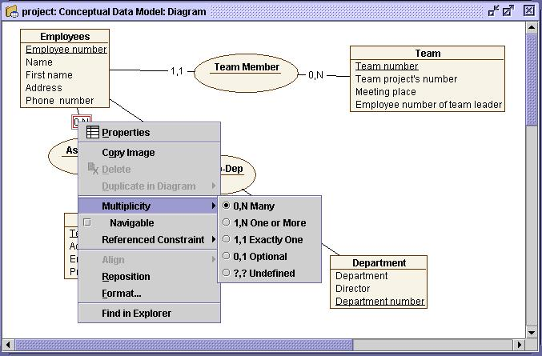
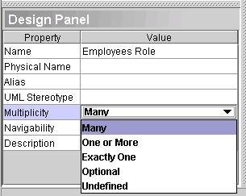

Modifying multiplicity
Multiplicity is the specification of the range of allowable cardinality that
a set can assume. Multiplicity specifications can be given to roles within
relationships, parts with composites, repetitions and other purposes.
Essentially, a multiplicity is a (possibly infinite) subset of the positive
integers.
When a relationship is created, default multiplicities 0,N and 1,1 are attributed to
the source and target entities respectively. However, it is possible to change the multiplicity
factor in the relationship.
- Place the pointer tool on the role (or relationship) descriptor label and right-click
it.
- Select Multiplicity from the pop-up menu and then the desired cardinality.

You can also change a relationship’s multiplicity from the design panel.
Left-click the role (or relationship) descriptor label and edit the multiplicity line.
